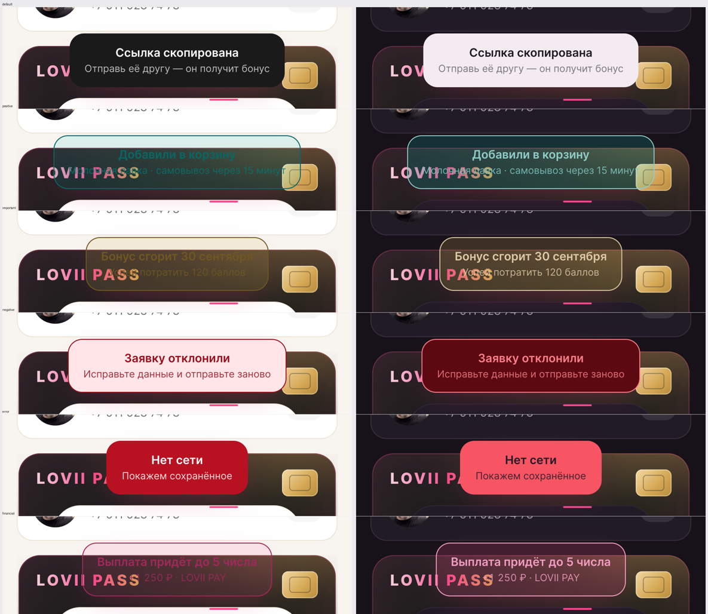

Шесть визуальных тонов. Тон выбирается по ситуации; текст — по матрице голоса (canon docs/11 §2, §5). Проверено в двух темах.
| Тон | Цвет | Когда | Пример текста |
|---|---|---|---|
| neutral (без тона) | тёмная плашка | нейтральное подтверждение действия | «Ссылка скопирована» · «Тёмная тема включена» |
| positive | бирюза | успех: добавили, начислили, подтвердили | «Добавили в корзину» |
| important | золото | важное, но не ошибка: срок, лимит, внимание | «Бонус сгорит 30 сентября» |
| negative | мягкий красный | отказ по решению человека: заявку отклонили | «Заявку отклонили» |
| error | плотный красный | сбой: нет сети, ошибка сервера, не сохранилось | «Нет сети» + «Покажем сохранённое» |
| financial | розовый | деньги: выплаты, кэшбэк, комиссии | «Выплата придёт до 5 числа» |
Слева — светлая тема, справа — тёмная. Порядок строк: neutral, positive, important, negative, error, financial.

financial);error), копирование, тема (neutral).Ограничение: тон применяется к тосту. Для постоянных состояний на экране (как блок отклонённой заявки) используется канонный role-status[data-tone], а не плашка тоста.